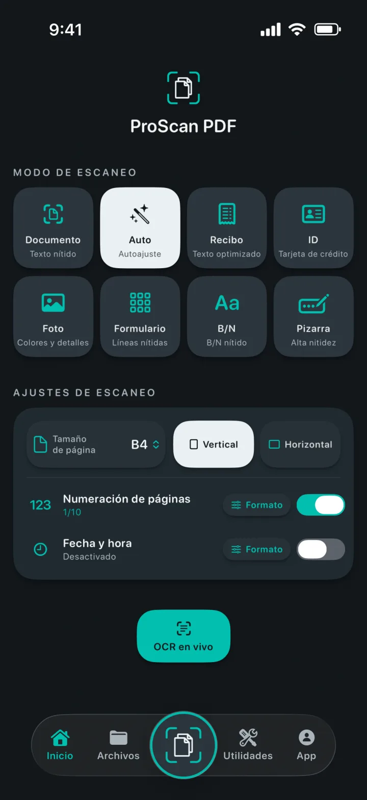
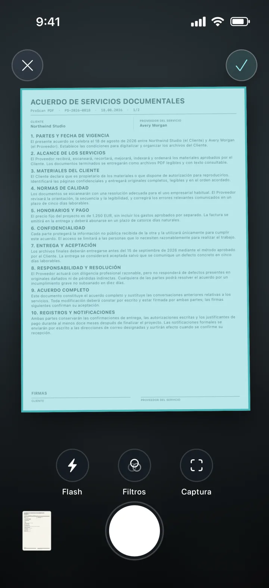
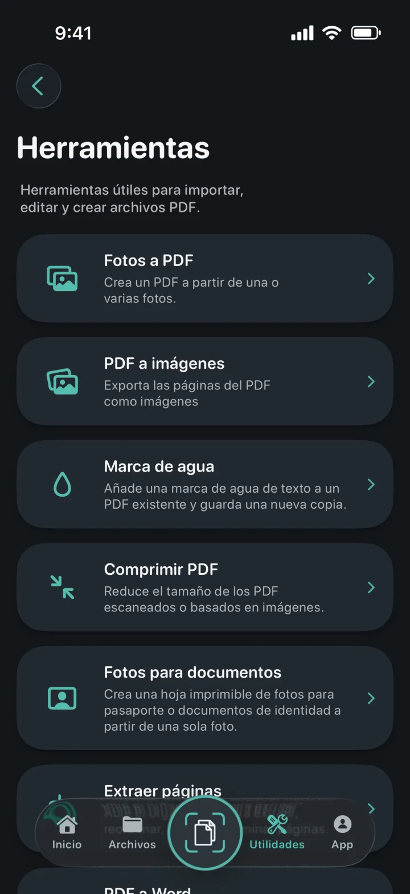
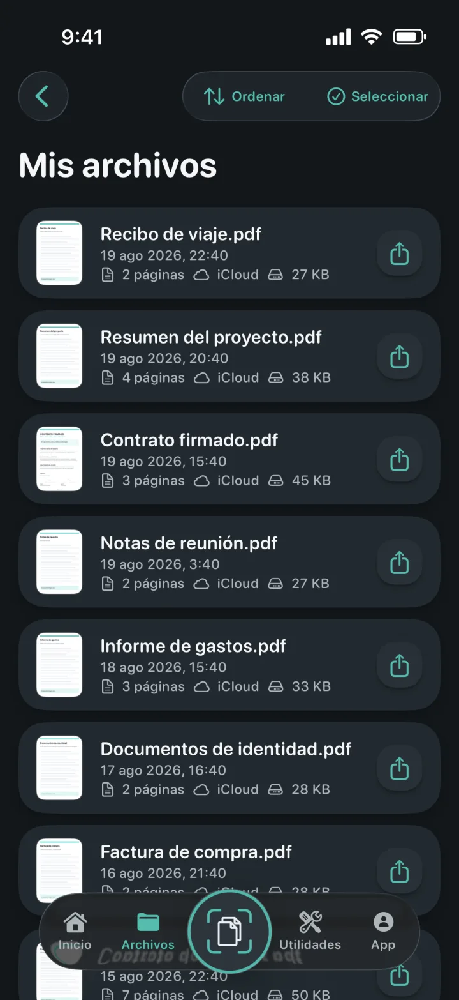
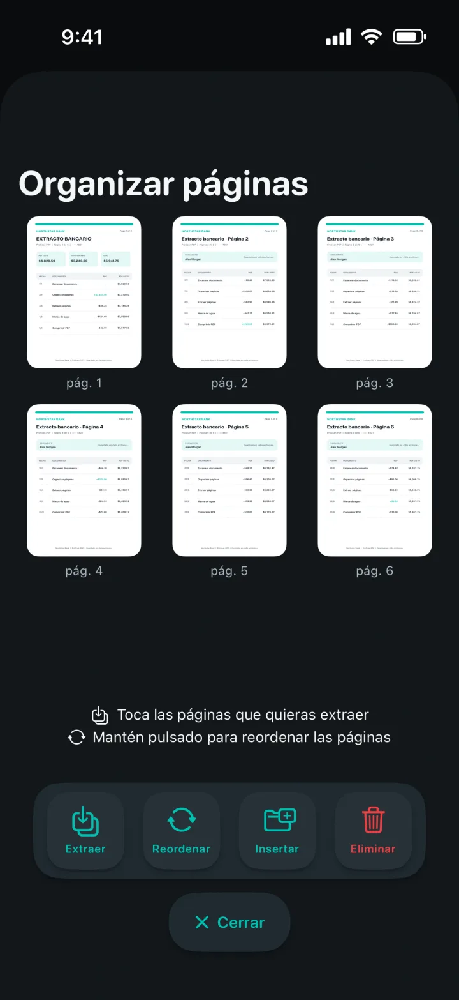
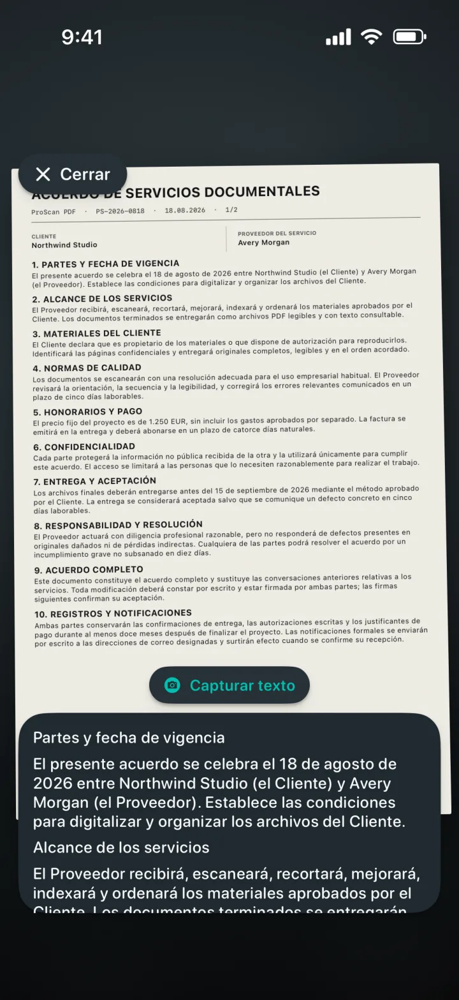

Fotos a PDF
Convierte una o varias fotos en un PDF impecable.
Un escáner que entiende cada página
Convierte documentos, recibos, identificaciones, notas y fotos en PDFs impecables. Después edítalos, fírmalos, protégelos y compártelos sin anuncios ni marcas de agua.

Un escáner que entiende cada página
Elige el modo adecuado, encuadra la página y deja que el escáner de documentos de Apple haga la captura. Configura el tamaño, la orientación, la numeración y la fecha y hora antes de empezar.

Todas tus herramientas PDF
Importa, convierte, edita y crea PDFs desde un único espacio de trabajo.

Convierte una o varias fotos en un PDF impecable.
Exporta cada página como imagen para guardarla o compartirla.
Añade una marca de agua de color a una nueva copia del PDF.
Reduce el tamaño de PDFs escaneados o basados en imágenes.
Recorta, comprueba y exporta tamaños exactos o plantillas imprimibles.
Extrae, reordena, inserta o elimina páginas PDF.
Crea archivos Word editables conservando el diseño cuando sea posible.
Crea copias buscables y encuentra texto en el visor.


Tus documentos siempre organizados
Las copias locales hacen que la biblioteca se abra rápidamente. La copia privada en iCloud te ayuda a recuperar tus documentos al cambiar de dispositivo Apple.
La privacidad forma parte del diseño
El escaneo, el OCR y el procesamiento de PDFs se realizan localmente en tu dispositivo. ProScan PDF no sube tus documentos a sus propios servidores.
Lee la política de privacidadOCR y documentos buscables
Captura texto en vivo, extrae contenido editable o crea copias PDF buscables. Todo se procesa en tu iPhone o iPad.

Diseñado para ti
Cada tema transforma la interfaz de la app e incluye un icono de inicio a juego.
Turquesa y blanco papel sobre grafito.
Cian eléctrico y violeta sobre negro intenso.
Controles azules limpios sobre una superficie clara.
Coral, violeta y menta sobre carbón suave.
Champán y rosa sobre azul noche refinado.
Plata fría y oro pulido sobre grafito.
Crema cálida y terracota sobre verde bosque intenso.
Disponible en inglés, alemán, español, francés, italiano, neerlandés, polaco, portugués de Brasil, portugués de Portugal, turco, chino simplificado, japonés, coreano e hindi.
Preguntas resueltas
Todo lo que necesitas saber sobre privacidad, almacenamiento y las funciones de ProScan PDF.
No. ProScan PDF no muestra anuncios ni añade marcas de agua a los documentos escaneados.
Las funciones principales de escaneo, OCR y PDF se ejecutan en tu dispositivo y funcionan sin conexión. La copia en iCloud y el uso compartido requieren conexión.
Los documentos se guardan en la biblioteca local de la app para acceder rápidamente. Cuando iCloud está disponible, las copias privadas pueden guardarse en tu cuenta iCloud.
Fotos a PDF, PDF a imágenes, marcas de agua, compresión, fotos para documentos, extracción y organización de páginas, PDF a Word, PDFs buscables, combinación, firma y protección con contraseña.
Obtienes tres escaneos gratis cada día. Pro desbloquea escaneos ilimitados y todas las herramientas Pro.

Tu próximo documento está a un toque
Sin anuncios. Sin marcas de agua.